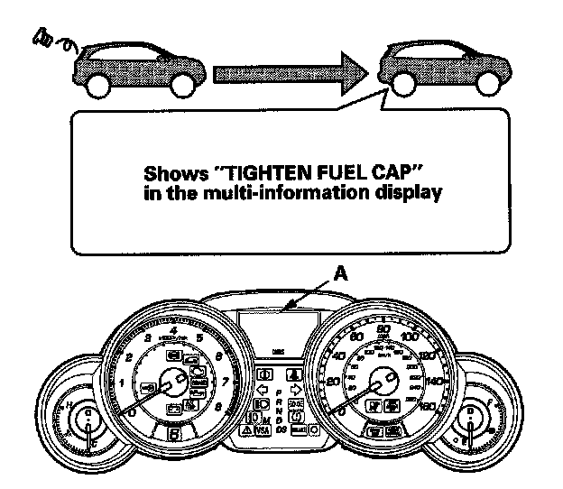

Evaporative Emissions System: Service Precautions
Fuel Cap Warning MessageThe PCM will detect a loose or missing fuel fill cap as an evaporative system leak and alerts the driver by showing a warning message in the gauge display.

First drive cycle
The first time a leak is detected a 'TIGHTEN FUEL CAP" message in the gauge display (A). To scroll to another message, press the select/reset button. The "TIGHTEN FUEL CAP" message will appear each time you restart the engine until the system turns the message off. Turn the engine off then replace or tighten the fuel fill cap until it clicks at least once. The message should go off after several days of normal driving after the fuel fill cap has been tightened or replaced.
To make the message go off (with the HDS)
Procedure
1. Tighten the fuel fill cap until it clicks.
2. Clear the Temporary DTC with the HDS.
3. Verify there is no leak by doing the EVAP FUNCTION TEST in the INSPECTION MENU with the HDS.
To make the message go off (without the HDS)
Procedure
1. Tighten the fuel fill cap until it clicks.
2. The message should go off after several days normal driving.